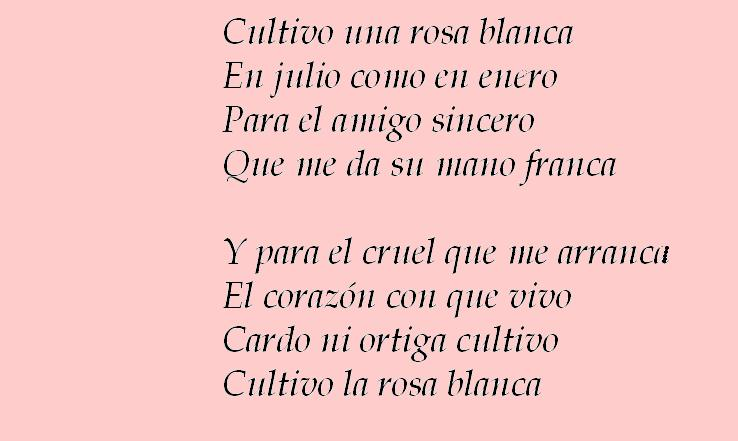
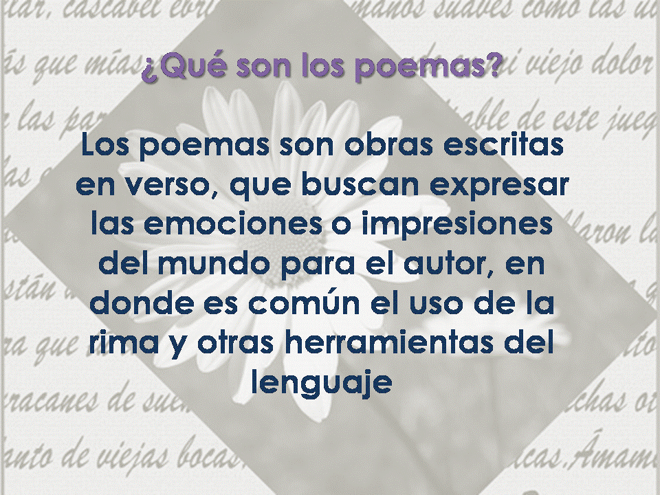

Los Poemas
El poema es una composición literaria escrita en versos, donde a través de la rima y otras herramientas del lenguaje, el autor expresa sus emociones e impresiones del mundo. Para esto se utiliza un lenguaje figurado y palabras escritas en verso o prosa, por lo general los poemas suelen ser líricos, dramáticos y épicos, manifestándose acerca de la esperanza, felicidad, la infidelidad, el desengaño, los sueños, el honor, entre otras emisiones y preocupaciones básicas de las personas.Son obras literarias generalmente escritas en versos y divididos en estrofas, principalmente son didácticas y narrativas. Antiguamente todas la composiciones literarias eran consideradas poemas ya que esta palabra se deriva del verbo “poesin”, que en griego significa “hacer”, por ello, el poema era cualquier escrito nacido de la literatura.En los poemas se encuentran presente una serie de elementos, como son los sentimientos y las experiencias del autor expresado en sus temas, de ésta manera el lector conoce lo que éste siente. Es importante resaltar que muchas de estas obras son poemas cortos, cuyo significado es expresado a través de pequeños versos, con la finalidad de concretar sus ritmos y recurrencias fónicas, con una estructura semántica o sintáctica.

